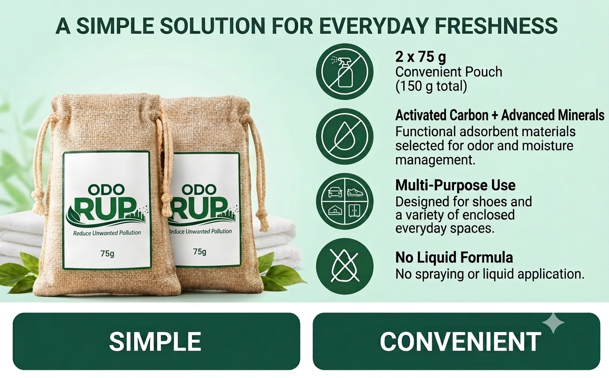
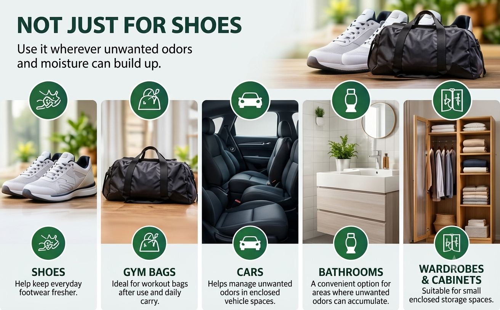
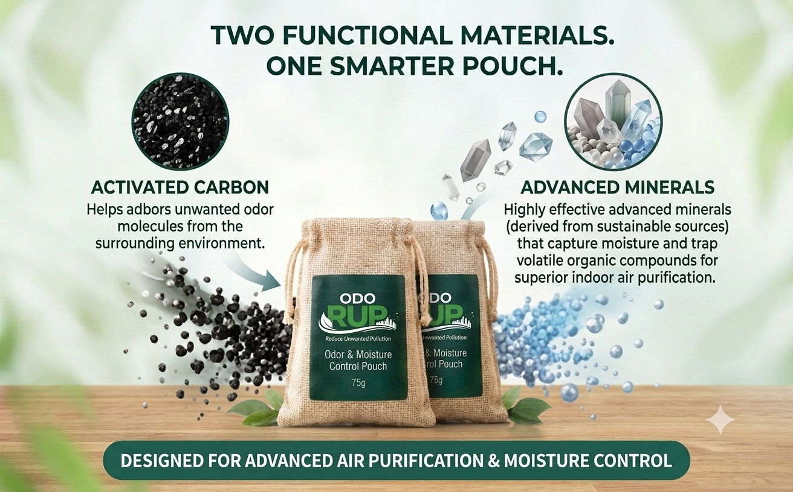
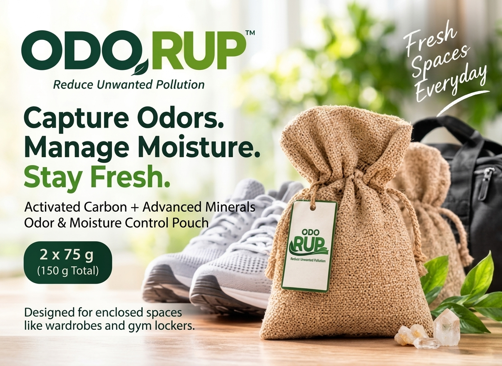
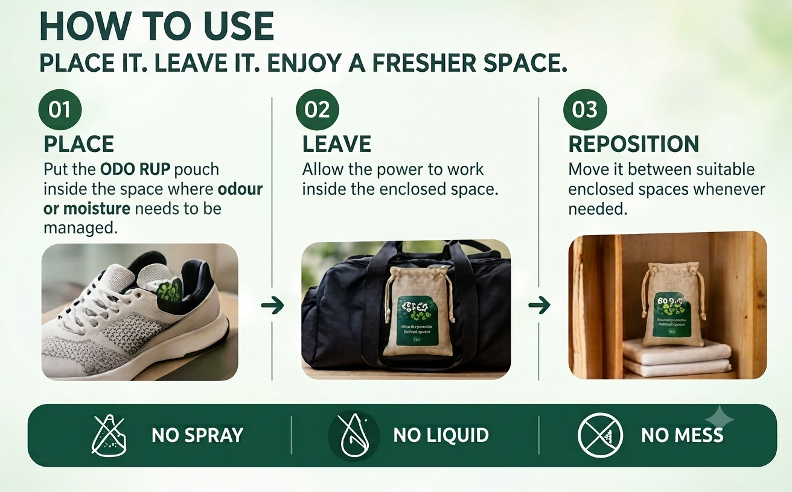

ODO RUP is a convenient deodorizer pouch with activated carbon and advanced minerals, designed for shoes and other suitable enclosed everyday spaces — without spraying liquids.
Activated carbon helps adsorb unwanted odor molecules from the surrounding enclosed space.
Functional adsorbent materials help manage moisture in a simple pouch format.
Simply place the pouch where freshness is needed and leave it to work.
With normal use and care, each ODO RUP pouch is designed for freshness support for up to 3 months. Recharge weekly by placing the pouch in direct sunlight; for better performance, keep it in a well-ventilated open-air space. Actual performance may vary depending on usage conditions, moisture and environment.
See how ODO RUP fits into a simple shoe-care routine.

Use in suitable enclosed spaces where unwanted odors and moisture can build up.

A convenient adsorbent combination for odor and moisture management.



ODO RUP Shoe Deodorizer Pouch — activated carbon + advanced minerals.


Refer to the current product pack and marketplace listing for final usage and product information.